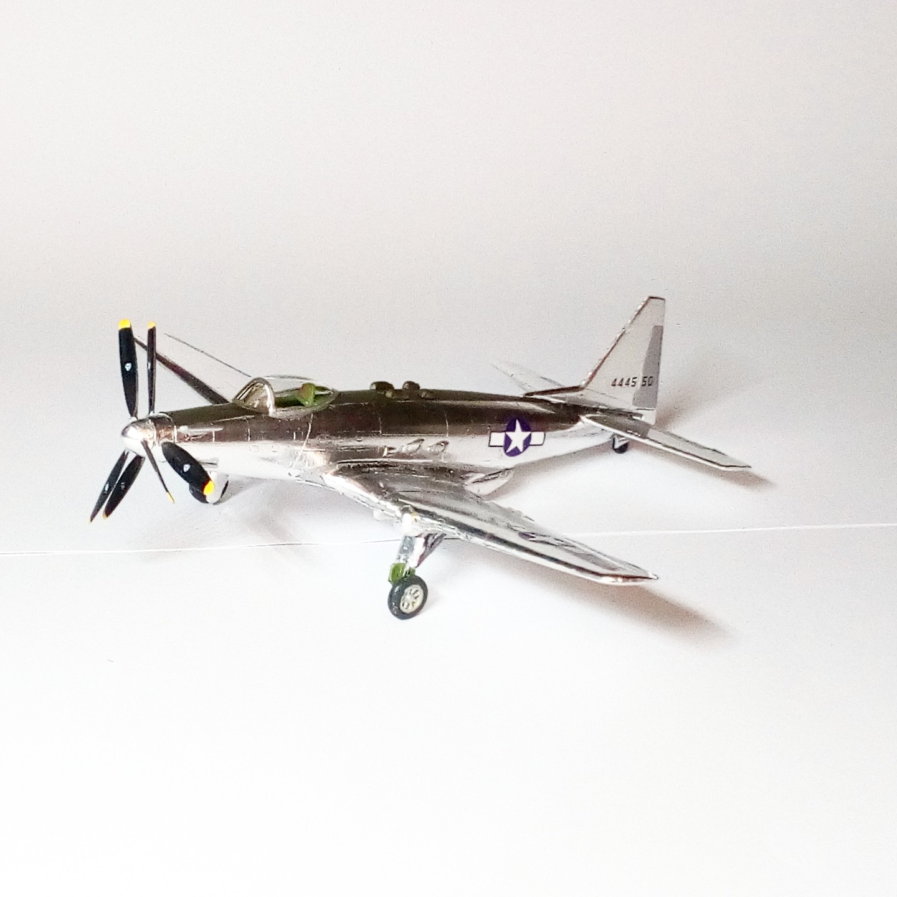

Aerei · scale model archive
Fisher P-75A Eagle
Fisher P-75A Eagle — Kit: Valom, Scale: 1/72. Heavy fighter prototype Another natural metal cutie, that's more like it #1/72 #Valom

Photo gallery
English description
Heavy fighter prototype
Another natural metal cutie, that's more like it
#1/72 #Valom
Descrizione italiana
Heavy figther prototipo.
Un altro metallo naturale cutie, che's more like lo.